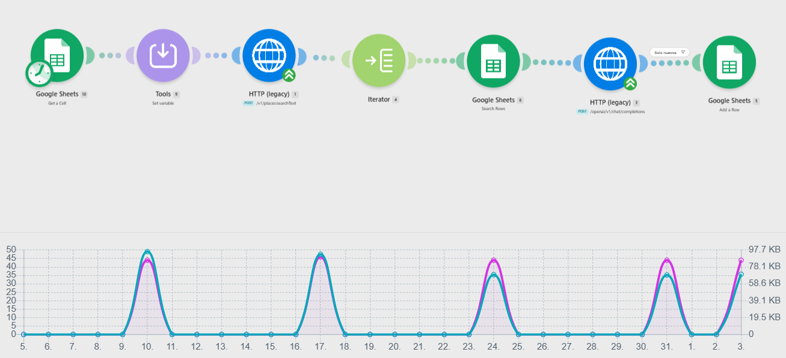
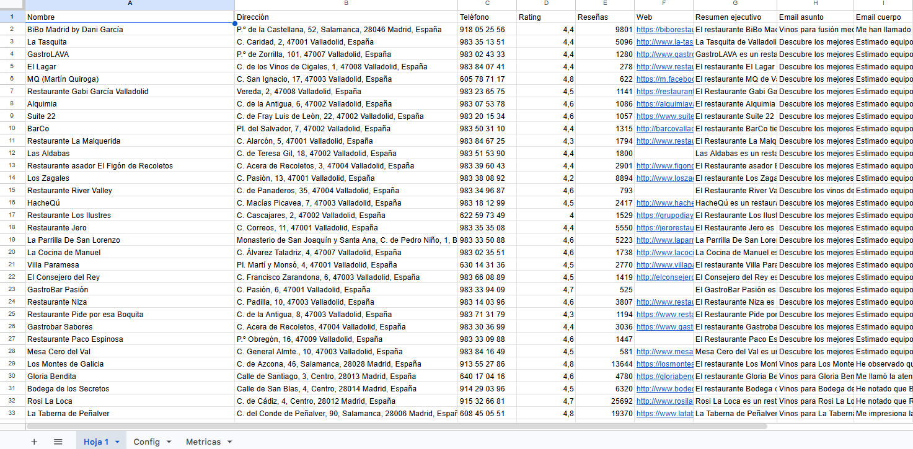
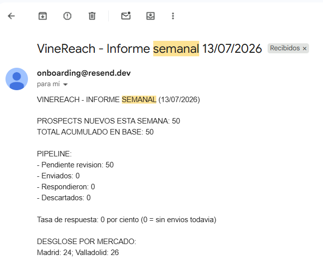

VineReach
Un sistema de IA que ayuda a las bodegas de Castilla y León a llegar a restaurantes y hoteles sin depender de un Excel que nadie actualiza.
Los tres módulos están en producción. El sistema se ejecuta solo cada semana. El generador de contenido puedes probarlo ahora mismo.
Abrir la demoLa prueba, en 30 segundos
Tres capturas de lo que está corriendo ahora mismo. No hay maquetas.



El problema
Las bodegas de Castilla y León tienen un producto excelente y un sistema de ventas B2B anticuado.
Un responsable comercial dedica su semana a llamadas que no contestan, restaurantes que «ya tienen proveedor», y un Excel de 400 contactos que nadie actualiza. El seguimiento depende de la memoria. Las oportunidades se pierden entre reuniones.
No es un problema de producto. Es un problema de proceso.
Castilla y León concentra más del 30% de la producción vinícola española: empresas con producto diferenciado, clientes B2B claros —restaurantes, hoteles, distribuidores— y un proceso comercial que no ha cambiado en 20 años.
Mis decisiones
Por qué bodegas
Dolor real y sin resolver, acceso directo desde Valladolid —Ribera del Duero, Rueda, Toro y Cigales a mano— y datos públicos abundantes para construir el sistema sin depender de acceso privilegiado a nada.
Por qué empecé por el contenido y no por la prospección
La prospección parece el dolor más directo, pero el contenido es el módulo con menor dependencia externa: no necesita datos de terceros, se puede publicar rápido y valida el interés antes de construir la parte más pesada del sistema. Construir infraestructura completa antes de probar una sola victoria vertical es la forma más común de no terminar un proyecto.
Por qué el comercial aprueba antes de enviar
En un sector relacional como el vino, un email mal dirigido enviado por un sistema quema un contacto para siempre. La IA hace el trabajo previo —encontrar, puntuar, redactar— pero la decisión final de contactar sigue siendo humana.
El stack
- Claude API para la generación de contenido y copy.
- Make para orquestar el flujo entre datos y modelo: lienzo visual, fácil ver el dato moverse entre pasos.
- Google Maps API para datos reales de restaurantes y hoteles por zona.
- Groq (Llama 3.3 70B) para el copy de prospección y el resumen ejecutivo del informe: latencia baja y coste marginal, suficiente para texto de trabajo.
- Google Sheets como base de datos: suficiente para el volumen actual, y es donde el comercial ya vive.
- Resend para la entrega del informe semanal por email.
- HTML/CSS/JS para la interfaz de la demo.
Cómo funciona
Tres módulos conectados que cubren el ciclo completo: atraer → contactar → medir.
Módulo 1 · Contenido · en producción
Esto es marketing, no solo generación de texto. El comercial no necesita saber de marketing de contenidos para tener una estrategia detrás de cada publicación: el sistema traduce tres inputs —tema, perfil del vendedor y beneficios del producto— en un carrusel de 8 slides para LinkedIn, la red donde vive la decisión de compra B2B.
Las decisiones de marketing detrás del formato:
- Carrusel de 8 slides, no un post suelto: obliga a construir un argumento paso a paso, en vez de una sola idea que el feed se traga en dos segundos.
- El perfil del vendedor cambia el tono: un SDR necesita apertura y curiosidad; un VP Sales, autoridad y visión. El sistema ajusta el ángulo según quién publica, no solo qué vino se vende.
- El público objetivo es un input obligatorio: el mismo vino se vende distinto a un restaurante de menú diario que a un hotel de cinco estrellas. El sistema fuerza a definirlo antes de generar nada.
Resultado: de tema y beneficios a carrusel completo —copy, descripción visual y caption— en 5 minutos, listo para publicar.
Módulo 2 · Prospección · en producción
Cada lunes a las 8:00 el sistema se ejecuta solo. Busca restaurantes y hoteles en la zona objetivo, recoge los datos reales de cada uno —nombre, dirección, teléfono, valoración, número de reseñas y web— y los vuelca en la hoja donde trabaja el comercial. Para cada local, la IA escribe un resumen de por qué es buen candidato y un email de primer contacto redactado para ese negocio concreto, no una plantilla con el nombre cambiado.
Dos decisiones que definen el módulo:
- El mercado se cambia desde una celda: el comercial escribe «Valladolid, España» o «Lisboa, Portugal» en la hoja de configuración y el sistema prospecta ahí a partir de ese momento. Sin tocar la automatización.
- Nunca repite un local: antes de escribir nada, el sistema consulta la lista actual y descarta lo que ya está dentro. Puedes lanzarlo diez veces seguidas sin ensuciar la hoja.
- Las búsquedas rotan por segmento: cada semana ataca un tipo de local distinto en vez de repetir la misma consulta, de forma que la lista crece en amplitud en lugar de agotarse en la primera ejecución.
El comercial revisa y aprueba antes de enviar. El sistema nunca envía un email de prospección por su cuenta.
Módulo 3 · Reporting · en producción
Una hora después de la prospección, cada lunes a las 9:00, llega al correo del responsable comercial el informe de la semana: prospects nuevos, total acumulado, estado del pipeline —pendientes, enviados, respondidos, descartados—, desglose por mercado y tasa de respuesta. La IA redacta un resumen ejecutivo con esos números y termina con una acción recomendada.
La condición que me impuse al construirlo: el informe llega sin abrir Make ni la hoja de cálculo, y el resumen solo puede usar los números reales. Si el dato no está en la hoja, no aparece en el informe.
Estado actual
Los tres módulos están construidos y funcionando. El ciclo se cierra solo: el lunes a las 8:00 entra la prospección, a las 9:00 sale el informe, y el generador de contenido está publicado y abierto a cualquiera. Nada de esto es una maqueta: son automatizaciones en producción que se ejecutan aunque yo no esté delante.
Hacia dónde va
El sistema cubre hoy el ciclo completo para una bodega. Las siguientes decisiones de producto ya están tomadas:
- De una bodega a varias: Google Sheets es la elección correcta para el volumen actual y para el sitio donde el comercial ya trabaja. Escalar a varias bodegas a la vez es el momento de mover la capa de datos a una base real.
- Cerrar el bucle de respuesta: hoy el informe mide lo que sale. El siguiente paso es que también lea lo que vuelve —quién contesta y qué contesta— para que el sistema aprenda qué ángulo funciona en cada tipo de local.
- Señales de intención: la prospección encuentra locales que encajan. La versión siguiente prioriza además por momento: aperturas recientes, cambios de carta, actividad que indica que hay una decisión de compra abierta.
Las decisiones de construcción detalladas están documentadas en el DECISIONS.md del repositorio.
¿Quieres verlo por dentro?
Puedo enseñarte el sistema completo y las decisiones que hay detrás.
Hablemos